Braided-line
flatworm
Pseudoceros sp. 4*
Family
Pseudocerotidae
updated
Feb 2020
Where
seen? This small flatworm is sometimes seen on our Southern shores, on coral rubble near living reefs.
Features: 2-4cm long. Body bluish-white to bluish (not solid blue and not white). One central line that is golden-speckled yellow with intermittent dull orange, so it appears braided, with dark blue border. Has
a pair of pseudotentacles made up of simple folded edges
of the body.
What does it eat? It has been seen on colonial ascidians,
including the pink ascidian.
Sometimes mistaken for similar flatworms. Here's more on how to tell apart small flatworms with one central line and three central lines. |
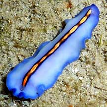
Pulau Tekukor, May 10
Photo shared by Loh Kok Sheng on his
blog. |
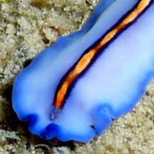
Central line golden-speckled yellow with intermittent dull orange, and dark blue border. |
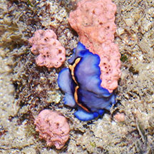
Kusu Island, May 16
Photo shared by Loh Kok Sheng on facebook. |
*Species are difficult to positively identify without close examination.
On this website, they are grouped by external features for convenience of
display.
| Other sightings on Singapore shores |
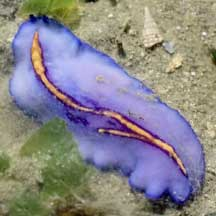
Chek Jawa, Jan 22
Photo shared by Vincent Choo on facebook. |
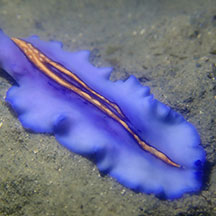
Chek Jawa, Jun 23
Photo shared by Jianlin Liu on facebook. |
|
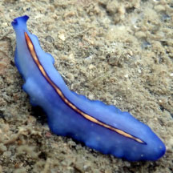
Sentosa Serapong, May 24
Photo shared by Loh Kok Sheng on facebook. |
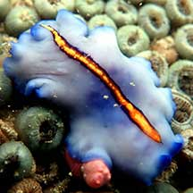
Pulau Tekukor, Nov 20
Shared by Jianlin Liu on facebook. |
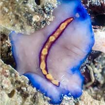
Pulau Tekukor, Jan 22
Photo shared by Vincent Choo on facebook. |
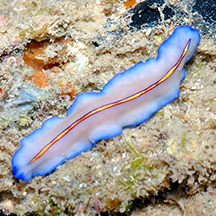
Kusu Island, Jan 14
Photo shared by Loh Kok Sheng on his
blog. |
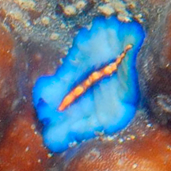
Kusu Island, Jan 14
Photo shared by Loh Kok Sheng |
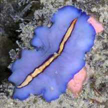
Is it eating the pink ascidian?
Sisters Island, May 07 |
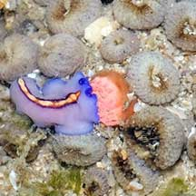
Lazarus Island, Feb 21
Shared by James Koh on flickr. |
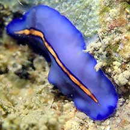
Lazarus Island, Feb 21
Shared by Jianlin Liu on facebook. |
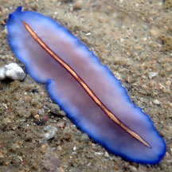
Lazarus Island, Jan 24
Shared by Loh Kok Sheng on facebook. |
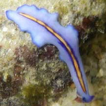
St. John's Island, Aug 09
Shared by Toh Chay Hoon on her
blog. |
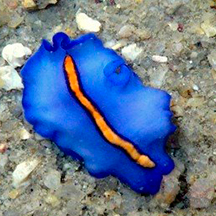
St John's Island, May 09
Shared by Loh Kok Sheng on his blog. |
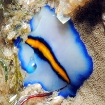
St. John's Island, Feb 11
Photo
shared by Loh Kok Sheng on his
blog. |
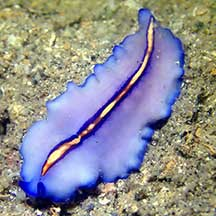
St. John's Island, Oct 20
Shared by Jianlin Liu on facebook. |
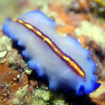
St. John's Island, Apr 22
Shared by Jianlin Liu on facebook. |
|
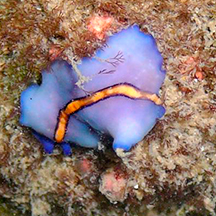
Sisters Island, May 08
Photo shared by Loh Kok Sheng on his
blog. |
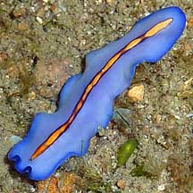
Sisters Island, Sep 10
Photo shared by Loh Kok Sheng on his
flickr. |
|
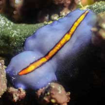
Small SIsters Island, Aug 21
Photo shared by Vincent Choo on facebook. |
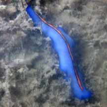
Big Sisters Island, Feb 19
Photo shared by Abel Yeo on facebook. |
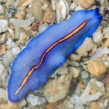
Pulau Jong, Jan 23
Photo shared by VIncent Choo on facebook. |
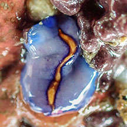
Terumbu Pempang Laut, Mar 24
Photo shared by Vincent Choo on facebook. |
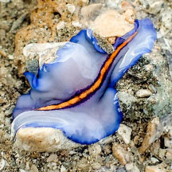
Pulau Semakau (South), Nov 24
From video shared by Vincent Choo on facebook. |
|
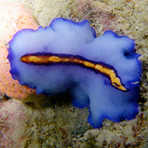
Cyrene Reef, Jul 08
Shared by Toh Chay Hoon on flickr. |
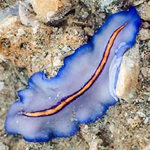
Pulau Semakau South, Oct 20
Photo shared by Vincent Choo on facebook. |
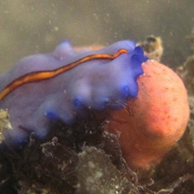
Terumbu Semakau, Dec 11
Photo shared by James Koh on his
blog. |
Acknowledgement
Grateful thanks to Rene Ong for sharing details and identifying the flatworms on this page.
References
- Rene S.L. Ong and Samantha J.W. Tong. 29 October 2018. A preliminary checklist and photographic catalogue of polyclad flatworms recorded from Singapore. Nature in Singapore 2018 11: 77–125.
|
|
|